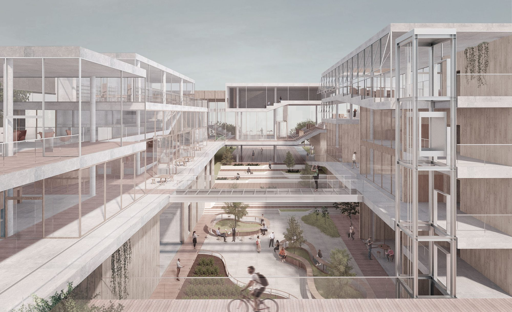
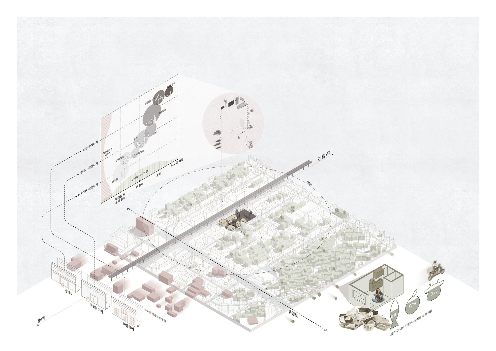
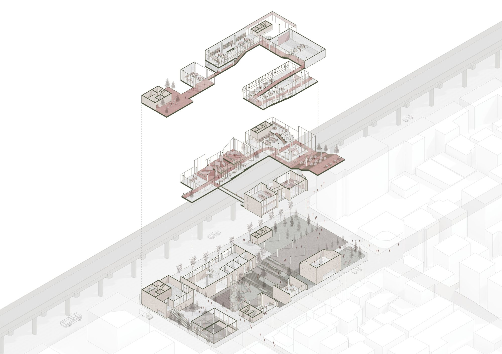
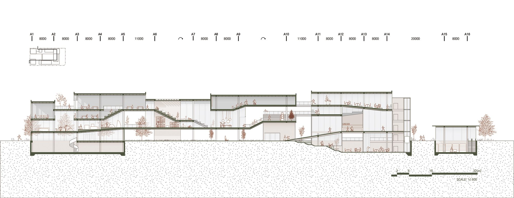
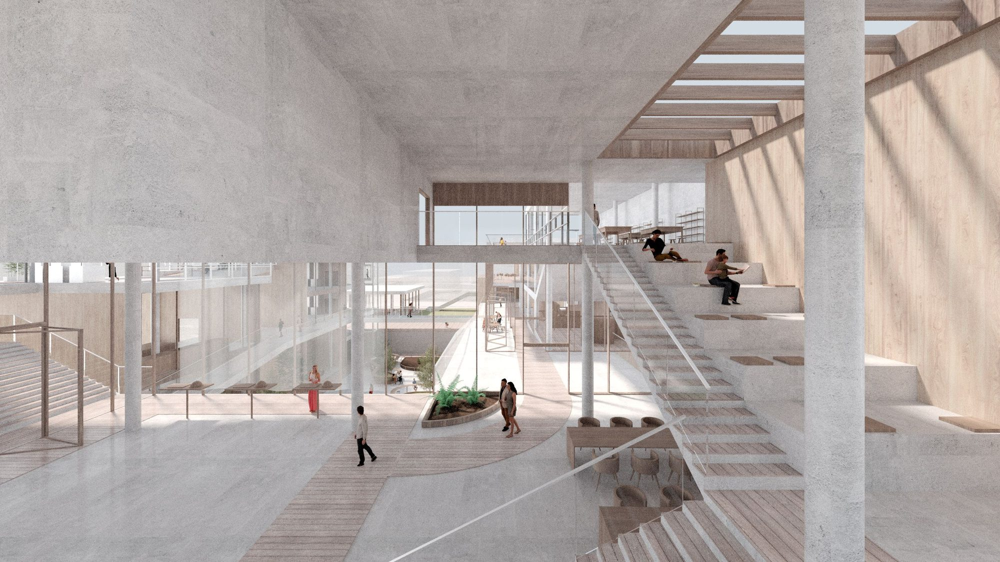
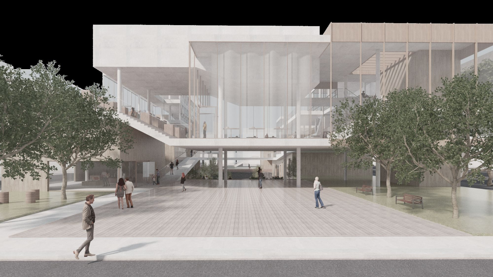

As single-person households increase, food delivery increases with them, and the environmental and health costs follow. The alternative this project proposes is architectural rather than behavioural: make a place where food is eaten where it is made, and make going there worth the walk.
Eating alone, together
The site lies between Seongsu and Konkuk University, surrounded by dense housing full of young single-person households. Gathering solo diners in one room creates its own fatigue — the tiring, unnecessary social contact of being alone in public. So the restaurant is crossed with a gallery: visitors have art to attend to while they eat, and being alone becomes the ordinary condition of the place rather than a conspicuous one.


A meal laid out as a walk
The building is organised as a promenade, and the courses are distributed along it. The uphill promenade carries appetisers, set beside art pieces of a similar temper and free to eat as you move. At the top is the meal pick-up and return area, connected vertically to the cold kitchen below by dumb waiter, where the main dish is collected and eaten sitting — reading, or watching. The downhill promenade holds dessert, alongside rooms for painting and sculpture where visitors make something themselves.


Cook, or be cooked for
Below the promenade sit the support programmes: a dish library, shared kitchens of both restaurant and citizen type, a grocery market, an artist studio, and the cold and hot kitchens. Visitors can cook for themselves — through the market and the shared kitchen — or order from a kitchen tenant. Either way the food travels vertically by dumb waiter, so plates reach the promenade without cutting across the walk.

